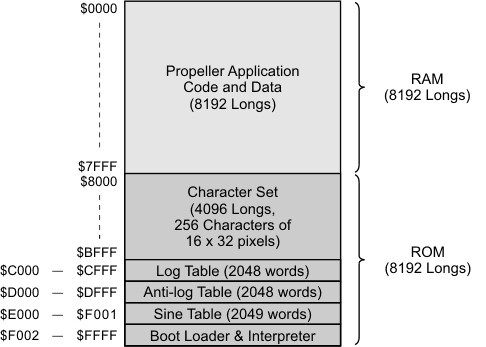

The Propeller chip has two kinds of memory:
Main Memory is located in the Hub and is accessible to each cog, one at a time, in a round-robin fashion. It is divided into two equal sections: Main RAM and Main ROM.
Main RAM is 32 KB, organized as 8192 32-bit longs. It holds your program, data, global variables, and stack space, which collectively make up your Propeller Application. Main RAM is byte, word, or long addressable and each location is usually referred to as an "address."
The 32 KB Main ROM holds read-only system resources: the Boot Loader and Spin Interpreter, character definitions, and log, antilog, and sine tables.

Cog RAM is a block of 512 longs (32-bits) of read/write memory inside the cog itself; it is used to hold Propeller Assembly programs and related data for exclusive use by that cog.
Cog RAM is divided into two sections: general purpose registers and special purpose registers. Each location within Cog RAM is long-addressable only and is usually referred to as a "register."
General purpose registers make up the first 496 longs (32-bits each) of Cog RAM. To execute Propeller Assembly code, the general purpose registers are first loaded with code and data from main memory, then execution starts at register 0. When executing Spin code, this portion of Cog RAM is first loaded with a copy of the Spin Interpreter.
Special purpose registers live in the last 16 longs of Cog RAM. The first four of them are read-only and return the values of the boot parameter, system counter, and input states for the I/O pins. The remaining 12 registers facilitate output state, pin direction, and interaction with the cog's counter modules, and video generator hardware.

Yes (in Spin) and No (in Propeller Assembly).
The Spin Interpreter implements a call stack to facilitate Spin method calling, parameter passing, and expression evaluation. The Propeller Application's stack is located in Main RAM immediately following the application's global variable memory. It expands and collapses as needed; growing towards higher addresses and shrinking towards lower addresses. Spin methods that are manually launched into other cogs store their stack starting at the StackPointer address given by the COGNEW or COGINIT command that launched them. Their stacks expand and contract in the same manner as with the Propeller Application stack. In both cases, the capacity of the stack (method nesting-depth, parameter list length, and expression complexity) is limited only by the amount of free memory available (for the application) or memory provided (by the developer).
Propeller Assembly language does not implement a call stack since doing so would unnecessarily consume valuable memory and impose undue limitations on applications. Instead, Propeller Assembly provides a different mechanism through the JMPRET instruction (and also CALL, JMP, and RET) to maintain nested call history. This method requires more developer influence but allows the memory to be used more efficiently (optimizing for the specific application) and has a distinct advantage allowing the implementation of simple task-switching code in real-time systems using JMPRET.
To determine the amount of space required by your object, see Stack Space.
A memory collision occurs when two or more cogs operate on a block of memory at the same time in a way that causes conflict between them.
A cog has exclusive access to its own Cog RAM, so no memory collision between cogs can occur there. However, all cogs share Main RAM; care must be taken to avoid collisions there.
A cog can read or write a byte, word, or long from Main RAM as an atomic operation—a single operation that no other cog can interfere with. In contrast, cogs can unknowingly interfere with each other's successive atomic operations (multiple reads or writes of bytes, words, or longs from Main RAM) since their respective operations are naturally interleaved when accessing a mutually-exclusive resource.
This situation can cause problems if two or more cogs simultaneously perform multiple opposing operations on the same logical block of memory. For example, two cogs may be tasked to cooperate on data contained in a block of memory 10 bytes in length. If one cog starts writing to the 10 bytes while another is reading, timing variations in their respective program loops can easily cause the "reading" cog to read a mixture of both new byte-sized data and old byte-sized data.
To prevent such misreads or miswrites, the cogs must coordinate their efforts through an agreed-upon synchronization mechanism. This mechanism serves as a "flag" to signal when a cog is performing a non-atomic operation on a mutually-exclusive resource. All cogs involved with that resource must check and set the "flag" before proceeding, and must clear the flag to indicate when they are done.
In many situations where memory is involved, a simple solution is to designate a byte, word, or long within the memory block to serve as this synchronization flag, but since that memory-based flag can not be read and written within the same atomic operation (it requires a read operation followed by a write operation) it may not work flawlessly for all situations. For this reason, a dedicated synchronization mechanism exists, called Locks, or semaphores.
The Propeller has 8 global lock bits which can be read and written simultaneously, as a single operation. When used properly, the lock bits can facilitate synchronization between cogs for any purpose desired; not just for Main RAM usage. The lock bits are managed through four commands: LOCKNEW, LOCKSET, LOCKCLR, and LOCKRET.
DAT block symbols exist in Main RAM but also in Cog RAM if they are launched with Propeller Assembly.
The DAT block itself is stored in the application image in Main RAM. Spin-based references to DAT symbols are accessing the corresponding location and data in Main RAM.
When a cog is launched with assembly code, any DAT symbols within 496 longs after the launch point are copied into Cog RAM. Unlike with Spin code, Propeller Assembly code that references those symbols is not accessing the corresponding location and data in Main RAM, but rather it is accessing the corresponding Cog RAM instead; its local copy. In addition, those symbolic references are always to longs of Cog RAM memory, regardless of how the symbol was actually declared.
The DAT block's primary purpose is to hold fixed data and Propeller Assembly code for the application. Symbolic declarations can be included and used to reference this data and code.
There's nothing preventing the contents of DAT from being modified at runtime, however, which naturally leads to its use to hold symbols as "special" variables. Their special attributes relate to how they are stored in the application and how they are treated by Spin and when launching Propeller Assembly code.
DAT blocks are stored in the application image in Main RAM. Just like code (PUB and PRI), there is only one instance of each DAT block, regardless of how many instances of the containing object there are. This means that Spin-based references to DAT symbols are accessing the corresponding location and data in Main RAM, and it's the same regardless of which instance of that object is making the reference. This is handy to share memory between multiple instances of an object.
When a cog is launched with assembly code, any DAT symbols within 496 longs after the launch point are copied into Cog RAM. Unlike with Spin code, Propeller Assembly code that references those symbols is not accessing the corresponding location and data in Main RAM, but rather it is accessing the corresponding Cog RAM instead; its local copy. In addition, those symbolic references are always to longs of Cog RAM memory, regardless of how the symbol was actually declared. In Propeller Assembly, no Main RAM references can be made by simply using the declared symbolic name; instead, the address of that symbol must be passed from the Spin object and used along with instructions like RDLONG and WRLONG.
Propeller Help Version 1.2
Copyright © Parallax Inc., dba Parallax Semiconductor
6/17/2011
 How is memory organized on the Propeller?
How is memory organized on the Propeller?